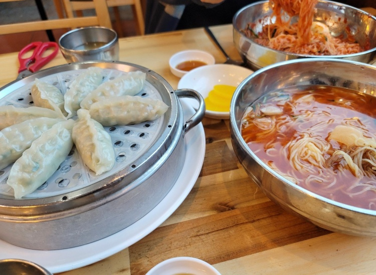
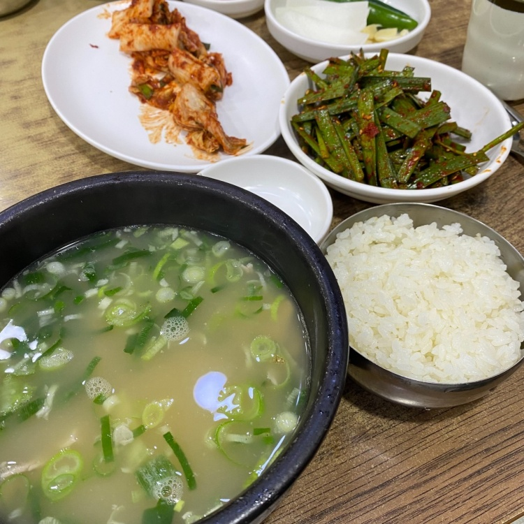
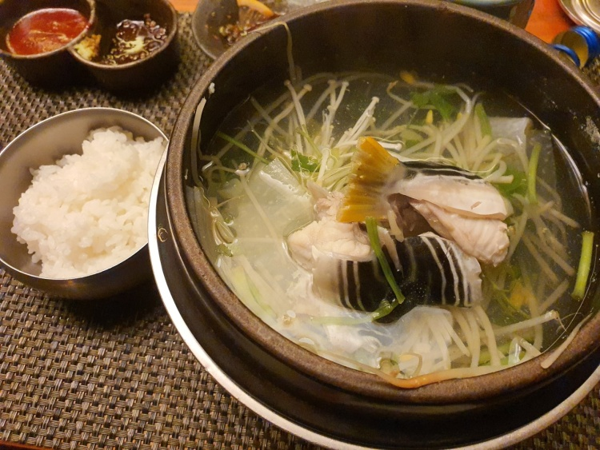
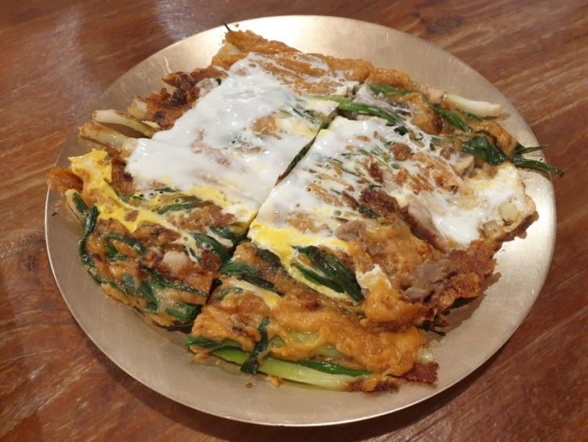
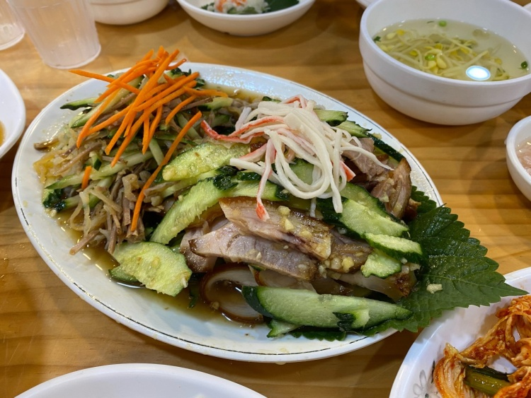
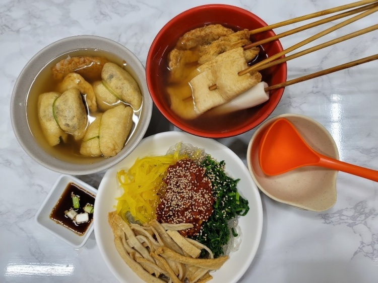

해운대 가야밀면 - 해운대
부산을 대표하는 음식인 밀면을 먹고싶다면 이 곳을 방문하는 것이 어떨까?
평점 :

주소 : 부산 해운대구 좌동순환로 27
위치 : 해운대 중동역 10번출구에서 245m정도 떨어져있다.
메뉴 : 메뉴는 비빔밀면,물밀면,만두로 구성되어있다.
가격 : 비빔밀면은 7500원,물밀면은 7000원 그리고 만두는 5000원이다.

본전 돼지국밥
부산을 대표하는 음식중 하나인 돼지국밥을 먹고싶다면 이 곳을 방문하는 것이 어떨까?
평점 :
주소 : 부산 동구 중앙대로214번길 3-8
위치 : 부산ktx역 5번출구에서 50m정도 떨어져있다.
메뉴 : 메뉴는 돼지국밥, 순대국밥, 내장국밥, 수육백반, 수육으로 구성되어있다.
가격 : 국밥들의 가격대는 8천원~만원으로 형성되어있다.

금수복국 해운대 본점 - 해운대
점심특선도 판매하니 저렴하게 복요리를 즐기고 싶다면 이곳을 점심에 방문하는 것을 추천한다
평점 :

주소 : 부산 해운대구 중동1로 43번길 23
위치 : 해운대역 1번출구에서 594m정도 떨어져있다.
메뉴 : 이 집의 대표메뉴는 복지리,탕/복찜/복껍질무침/복튀김이 있다.
가격 : 복지리는 12,000~20,000원대로 가격이 형성되어있다.

동래할매파전
부산만의 특이한 파전을 경험해보고 싶다면 이 곳을 방문하는 것을 추천한다.
평점 :
주소 : 부산 동래구 명륜로 94번길 43-10
위치 : 수안역 4번출구에서 284m정도 떨어져있다.
메뉴 : 이 집의 대표메뉴는 동래파전이다. 간장에 찍어먹는 보통의 전과 다르게 동래파전은 초장에 찍어먹는다.
가격 : 파전의 가격은 소:22,000 중:33,000 대:40,000 이다

부산족발
냉채족발의 원조를 맛보고 싶다면 이 곳을 방문하는 것이 어떨까?
평점 :
주소 : 부산 중구 광복로 19-1
위치 : 자갈치역 7번출구에서 259m정도 떨어져있다.
메뉴 : 이 집의 대표메뉴는 족발,냉채족발,장육이다.
가격 : 족발들의 가격대는 소:30,000 중:35,000 대:40,000 특:50,000 이다.

원조 깡통골목 비빔당면
부산에서만 먹을 수 있는 비빔당면을 도전하고 싶다면 이 곳을 방문하는 것이 어떨까?
평점 :
주소 : 부산 중구 중구로 47번길 28
위치 : 자갈치역 3번출구에서 559m정도 떨어져있다.
메뉴 : 당면메뉴들 이외에도 김밥,우동,떡볶이,오뎅,국수,유부전골등이 있다.
가격 : 이 집의 대표메뉴는 비빔당면(5000원)과 물당면(6000원)이다.